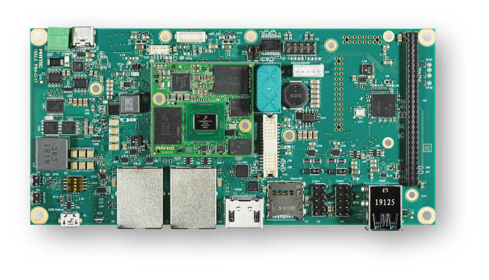

phyBOARD-Pollux i.MX8M Plus
phyBOARD-Pollux i.MX8M Plus
Overview
The phyBOARD-Pollux is based upon the phyCORE-i.MX8M Plus SoM which is based on the NXP i.MX8M Plus SoC. The SoC includes four Coretex-A53 cores and one Coretex-M7 core for real time applications like Zephyr. The phyBOARD-Pollux can be used for various applications like SmartHome, Industry 4.0, IoT etc. It features a lot of interfaces and computing capacity. It can be used as a reference, to develop or in the final product too.
Board features:
Memory:
RAM: 256MB - 8GB LPDDR4
EEPROM: 4kB - 32kB
eMMC: 4GB - 64GB (eMMC 5.1)
SPI NOR Flash: 4MB - 256MB
Interfaces:
Ethernet: 2x 10/100/1000BASE-T (1x TSN Support)
USB: 2x 3.0 Host
Serial: 1x RS232 / RS485 Full Duplex / Half Duplex
CAN: 2x CAN FD
Digital I/O: via Expansion Connector
PCIe: 1x miniPCIe
MMX/SD/SDIO: microSD slot
Display: LVDS(1x4 or 1x8), MIPI DSI(1x4), HDMI
Audio: SAI
Camera: 2x MIPI CSI-2 (phyCAM-M)
Expansion Bus: I2C, SPI, SDIO, UART, USB
JTAG: via PEB-EVAL-01
LEDs:
1x Multicolor Status LED via I2C
{kind=link}

More information about the board can be found at the PHYTEC website.
Supported Features
The phyboard_pollux board supports the hardware features listed below.
- on-chip / on-board
- Feature integrated in the SoC / present on the board.
- 2 / 2
-
Number of instances that are enabled / disabled.
Click on the label to see the first instance of this feature in the board/SoC DTS files. -
vnd,foo -
Compatible string for the Devicetree binding matching the feature.
Click on the link to view the binding documentation.
It’s recommended to disable peripherals used by the M7-Core on the host running on the Linux host.
Connections and IOs
The following components are tested and working correctly.
UART
Board Name |
SoM Name |
Usage |
|---|---|---|
Debug USB (A53) |
UART1 |
UART Debug Console via USB |
Wo WiFi Module |
UART3 |
UART to WiFi/BLE Module |
Debug USB (M7) |
UART4 |
UART Debug Console via USB |
Note
The WiFi/BLE Module connected to UART3 isn’t working with Zephyr yet. UART3 can also be used through pin 31(RX) and 33(TX) of connector X6.
GPIO
The pinmuxing for the GPIOs is the standard pinmuxing of the mimx8mp devicetree created by NXP and can be found at dts/arm/nxp/imx/nxp_imx8ml_m7.dtsi. The Pinout of the phyBOARD-Polis can be found at the PHYTEC website.
I2C
There are multiple on-device I2C devices already connected to I2C buses. Some of these devices should not be used by the M7-Core if running the PHYTEC BSP on the A53-Core.
Here is an overview of the on-device I2C devices:
I2C Device |
Address |
Usage |
Can be used by M7? |
|---|---|---|---|
PMIC |
Power Management |
Should not be used |
|
EEPROM (Atmel 24C32) |
EEPROM (U-Boot config) |
Should not be used |
|
RTC (RV3028) |
Real Time Clock |
Should not be used |
|
EEPROM (Atmel 24C02) |
EEPROM (On carrier-board) |
yes |
|
PCA9553 |
RGB LED |
yes |
Note
i2c1 is used by the A53-Core to communicate with the PMIC. Because the PMIC is a crucial part of the system, i2c1 should be used by the A53-Core only to avoid conflicts.
Programming and Debugging
The i.MX8MP does not have a separate flash for the M7-Core. Because of this the A53-Core has to load the program for the M7-Core to the right memory address, set the PC and start the processor.
The M7 can use up to 3 different RAMs (currently, only two configurations are supported: ITCM and DDR). These are the memory mapping for A53 and M7:
Region |
Cortex-A53 |
Cortex-M7 (System Bus) |
Cortex-M7 (Code Bus) |
Size |
|---|---|---|---|---|
OCRAM |
0x00900000-0x0098FFFF |
0x20200000-0x2028FFFF |
0x00900000-0x0098FFFF |
576KB |
DTCM |
0x00800000-0x0081FFFF |
0x20000000-0x2001FFFF |
128KB |
|
ITCM |
0x007E0000-0x007FFFFF |
0x00000000-0x0001FFFF |
128KB |
|
OCRAM_S |
0x00180000-0x00188FFF |
0x20180000-0x20188FFF |
0x00180000-0x00188FFF |
36KB |
DDR |
0x80000000-0x803FFFFF |
0x80200000-0x803FFFFF |
0x80000000-0x801FFFFF |
2MB |
For more information about memory mapping see the i.MX 8M Plus Applications Processor Reference Manual (section 2.1 to 2.3)
At compilation time you have to choose which memory region will be used. This configuration is done in the devicetree and the defconfig / the config of your program.
By default Zephyr will use the TCM memory region. You can configure it to use the DDR region. In the devicetree overwrite you can select both options.
chosen {
/* TCM */
zephyr,flash = &itcm;
zephyr,sram = &dtcm;
};
chosen {
/* DDR */
zephyr,flash = &ddr_code;
zephyr,sram = &ddr_sys;
};
And in the prj.conf the configuration to the DDR memory region:
CONFIG_CODE_DDR=y
CONFIG_CODE_ITCM=n
Connecting to the Serial Console
A serial console for both the application CPU and the Cortex M7 coprocessor are
available via the onboard dual USB-to-UART converter. If you use Linux, create a
udev rule (as root) to fix a permission issue when not using root for
flashing.
# echo 'ATTR{idProduct}=="0a70", ATTR{idVendor}=="10c4", MODE="0666", GROUP="plugdev"' > /etc/udev/rules.d/50-usb-uart.rules
Reload the rules and replug the device.
$ sudo udevadm control --reload-rules
Finally, unplug and plug the board again for the rules to take effect.
Connect to the console via your favorite terminal program. For example:
$ minicom -D /dev/ttyUSB1 -b 115200
Flashing and Debugging via JTAG
The phyBOARD-Pollux can be debugged using a JTAG or SWD debug adapter. A Segger
JLink can be connected to the compatible JTAG connector on Phytec’s
PEB-EVAL-01 shield.

PEB-EVAL-01
Before flashing or debugging via a JTAG debug adapter, the M7 core has to be switched on:
u-boot=> bootaux 0x7e0000
Here is an example for the Hello World application:
# From the root of the zephyr repository
west build -b phyboard_pollux/mimx8ml8/m7 samples/hello_world
west flash
The console should now show the output of the application:
*** Booting Zephyr OS build v3.7.0 ***
Hello World! phyboard_pollux/mimx8ml8/m7
Starting a debug session is similar to flashing:
# From the root of the zephyr repository
west build -b phyboard_pollux/mimx8ml8/m7 samples/hello_world
west debug
Starting the M7-Core from U-Boot and Linux
Loading binaries and starting the M7-Core is supported from Linux via remoteproc or from U-boot by directly copying the firmware binary. Please check the phyCORE-i.MX 8M Plus BSP Manual for more information.